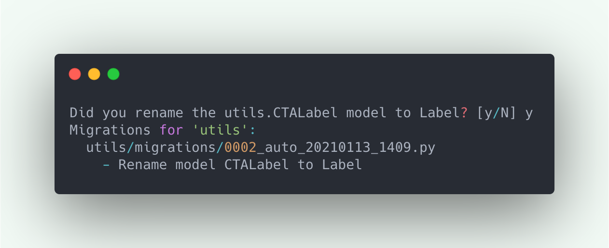
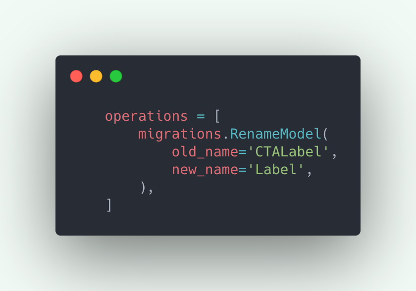
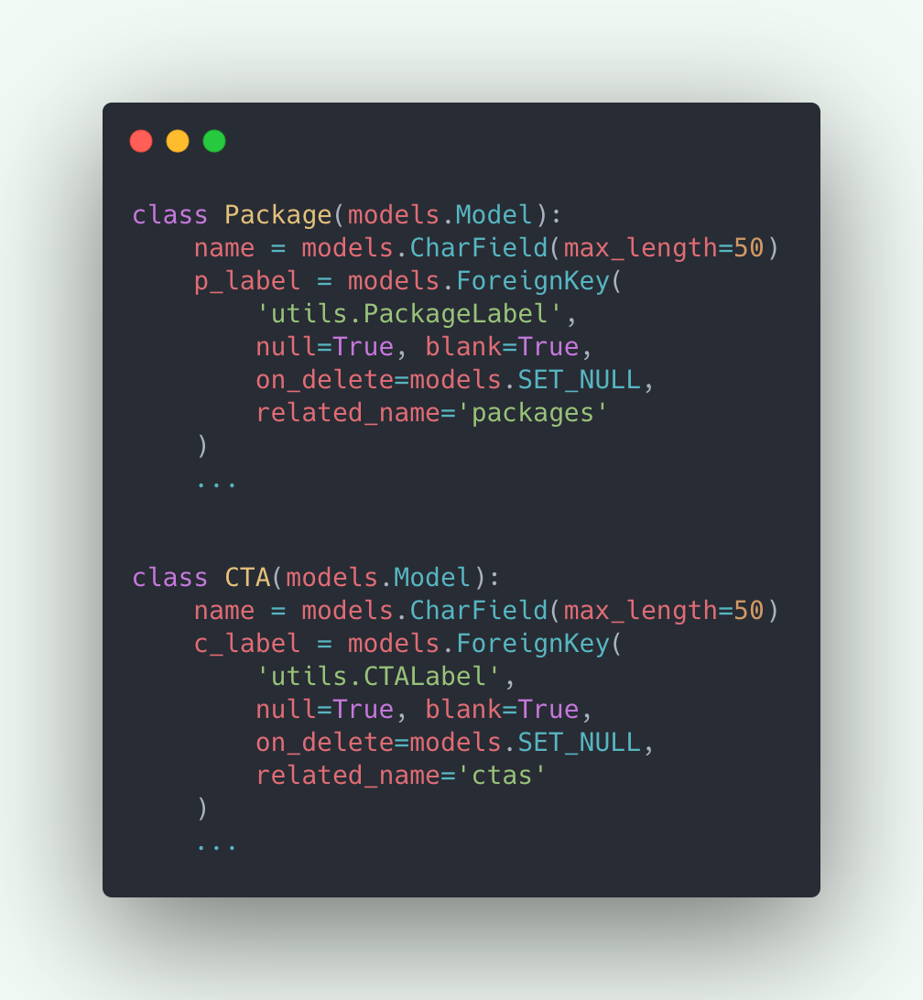
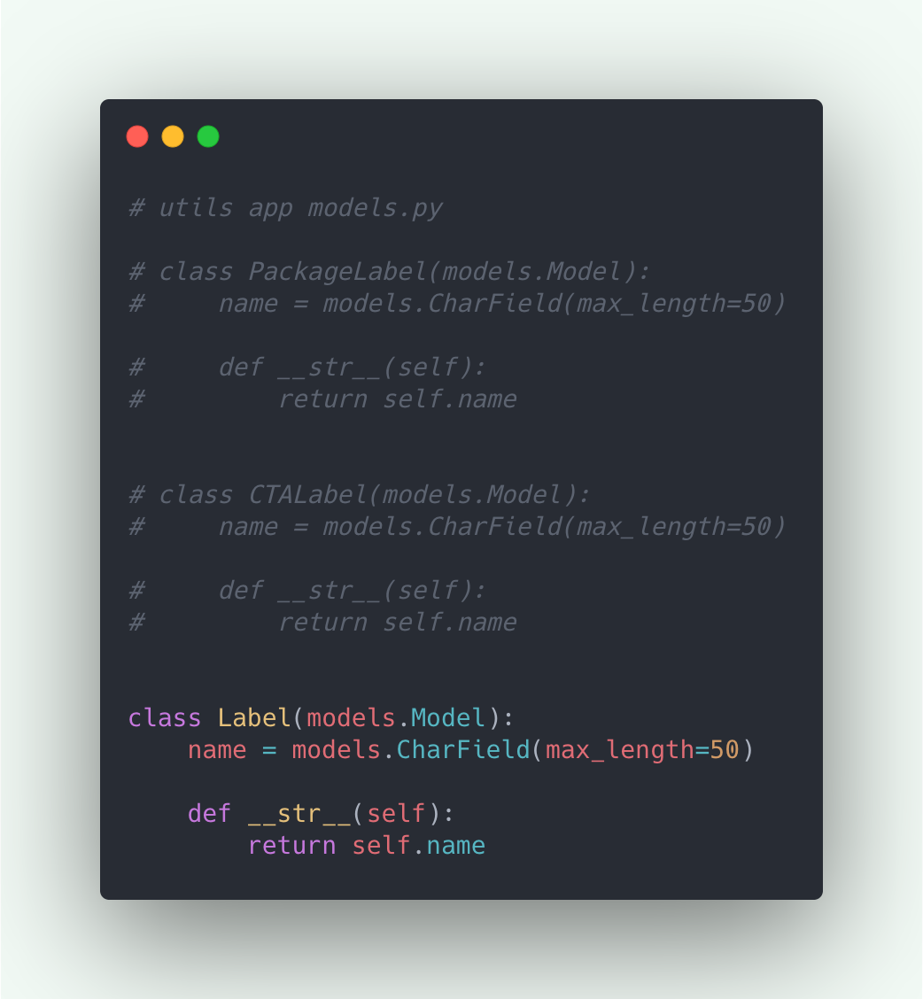
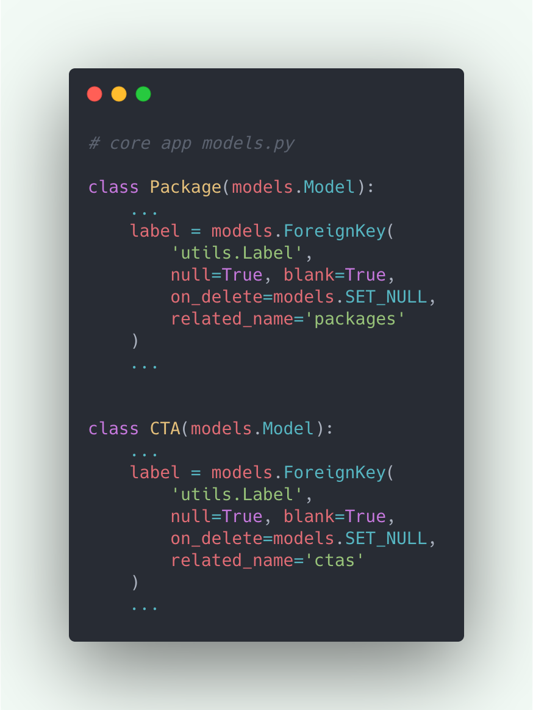
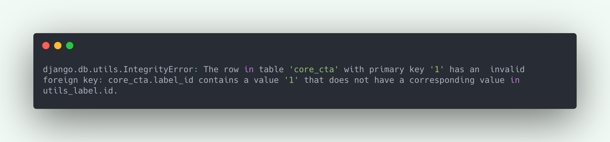
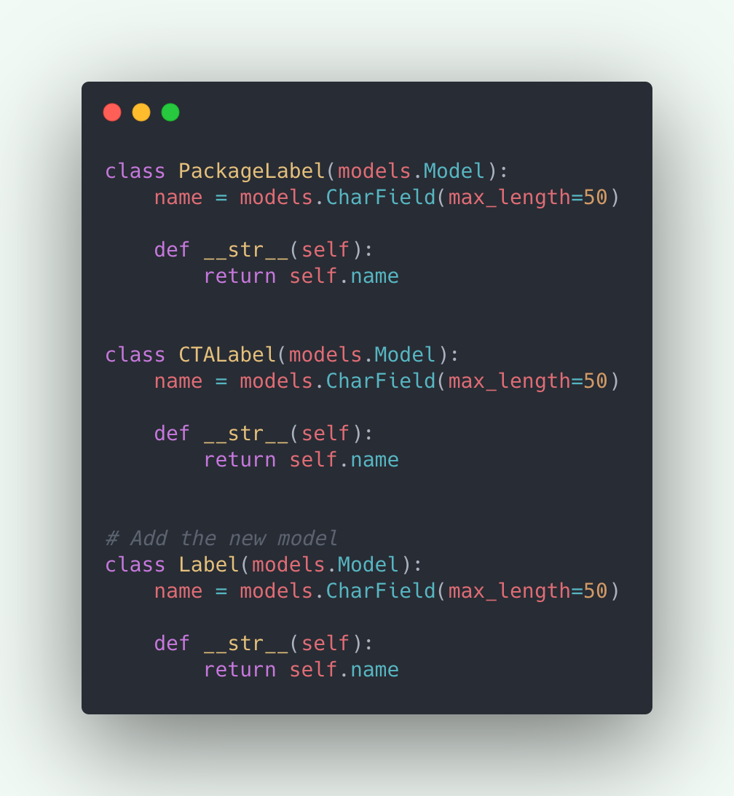
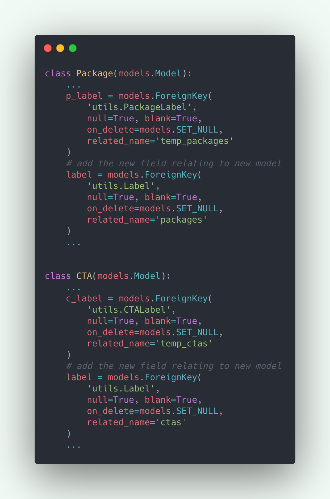
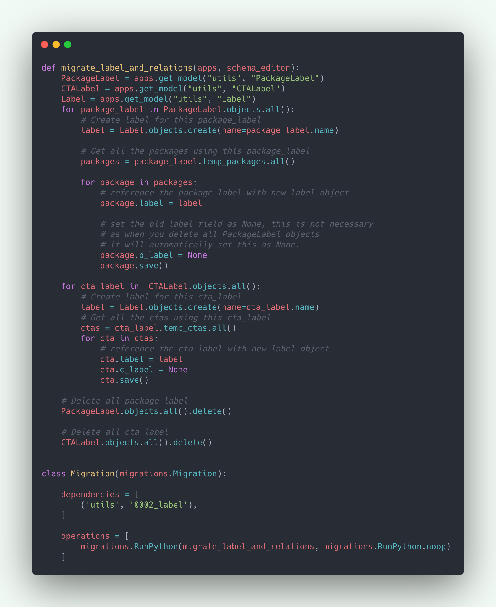
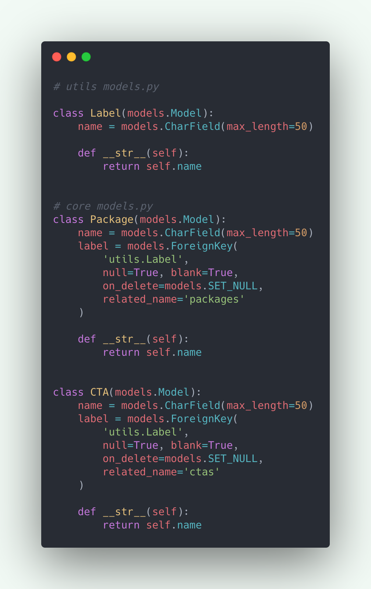

Django
How to safely remove Django model and its relations
How to safely remove Django model and its relations

Removing a Django model or its relationships as direct as just removing them from code could lead to irreversible errors.
Before removing them from code we need to make sure to delete all its objects and the relations of those objects with other models.
But wait, why on earth do we need to remove a model and its relations? At most we may just want to “rename” a model. And for that, Django already provides RenameModel operation. So whenever you rename a model and run makemigrations, Django is smart enough to ask if you renamed an existing model.

This will create a migrations file as simple as:

Which automatically transfers all your old model’s data to the new model along with its relations.
Now coming back to the question “Why do we need to remove a model and its relations?”.
Well I can’t think of a direct answer. But here is a use case where you kind of have to:
Suppose you have the following models in your core app:

As you can see both the models have a field label which has a ForeignKey relations with two separate models in the utils app “PackageLabel” and “CTALabel”.
Initially you were not sure if both these models can be just one model, “Label”, as you might be thinking of storing some different data in both, or the idea was not finalised. But now you are!
So here is our first use case where we need to delete our old models and their relations:
Merging two models into one.
It is obvious that we can not use RenameModel here. So the only way to preserve the data of old models is to write a data migration to transfer both models data and their relations to the new one.
In case you delete the models without changing the references of the models it is related to, you’ll keep on getting errors when trying to migrate, not to mention you’ll also loose all the old models data. For example:
Remove old models directly from the utils app:

And then Remove relational field directly from core app models:

Run “python manage.py makemigrations”
And then run, “python manage.py migrate”, you’ll get the following error:

Which basically means that your CTA object is related to a Label object which doesn’t exist.
In order to correctly do this:
- Add the new model and new fields relating to it
- Migrate old model and its relations to new one
- Delete old model and its relations
So our models.py in the utils app look like:

And the models.py in core app look like:

Notice that along with adding the new label field I also changed the reverse accessor of the old field to ‘temp_’, to use the correct reverse accessor for the new model.
Now that we have added the new model and new relational fields we can do “makemigrations” and “migrate”.
Next task is to write data migrations to migrate old models data to the new one. To do that we first need to create an empty migrations file: “python manage makemigrations utils --empty”
And add the code to migrate in that:

Note: we have also written a blog on understanding data migration, in case you’ve not written them before.
Now doing “python manage.py migrate” will migrate the old models data and its relations to the new one.
We can now go ahead and safely delete the old models and there relation fields:

Then do “makemigrations” and “migrate”!
That’s it. You have successfully removed a Django model and its relations without introducing any errors in your project.
Another use case where you may have to delete a Django model is when you have to move a model from one app to another.
This workflow of adding the new field which is replacing the old one, and only removing the old one after having been migrated the data can also be used, when you’ve to change a ForeignKey field to ManyToMany.
Thanks for reading!
Tagged under
Django